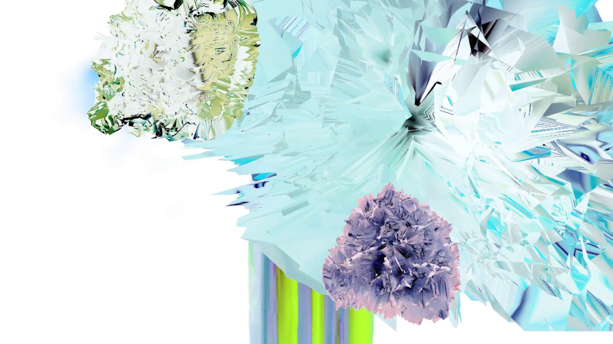
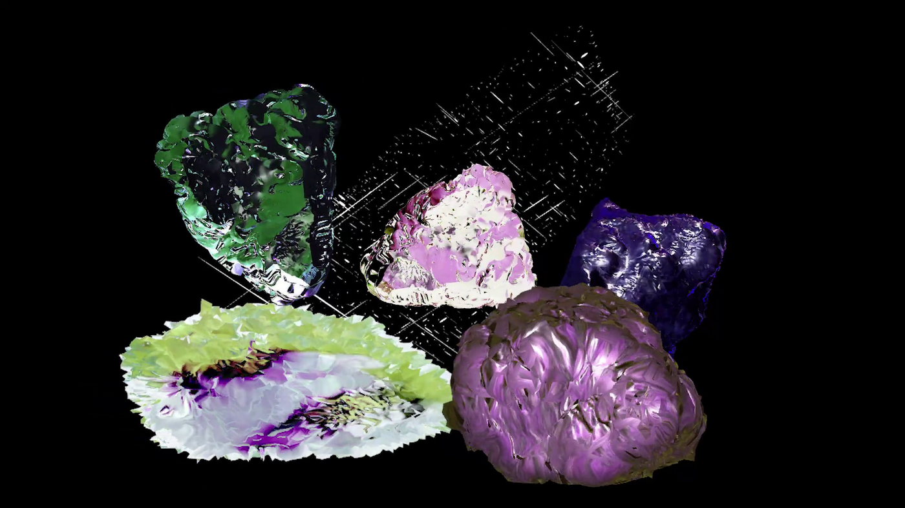
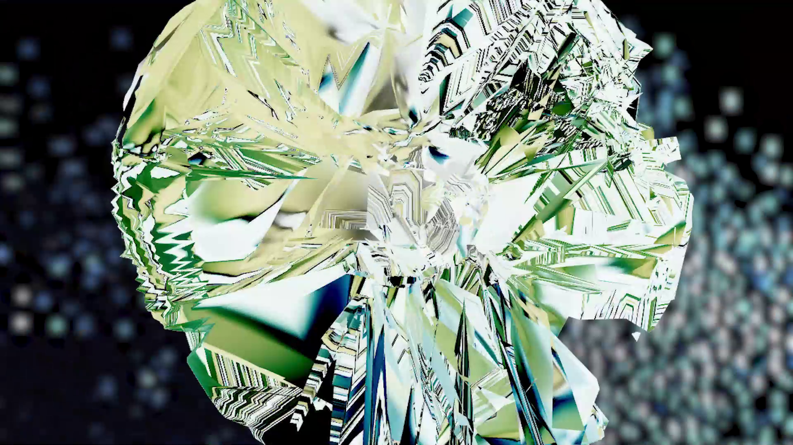
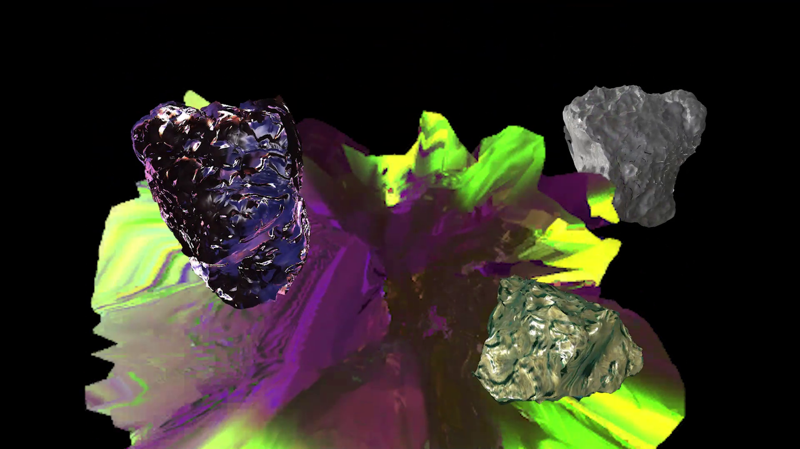
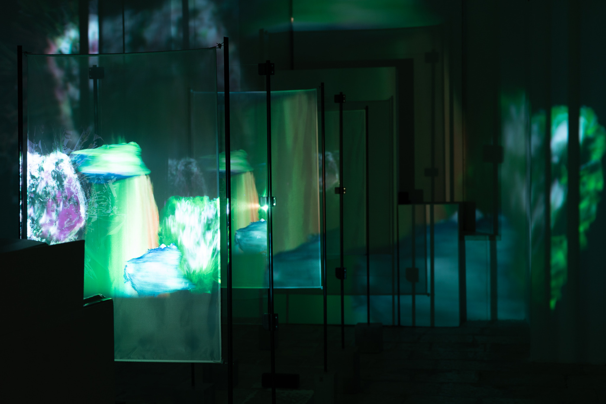
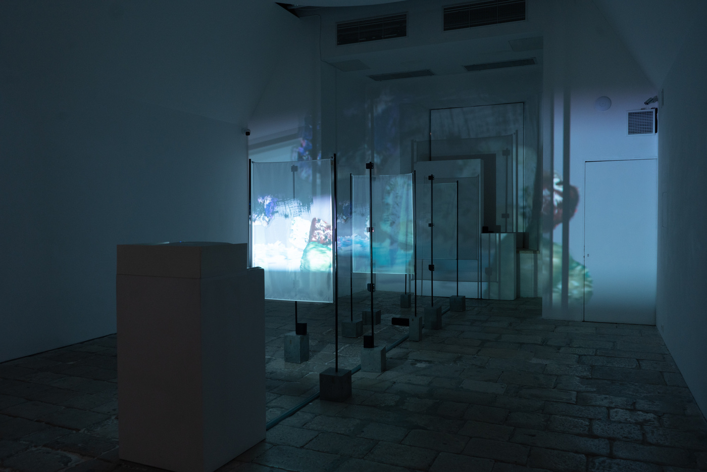
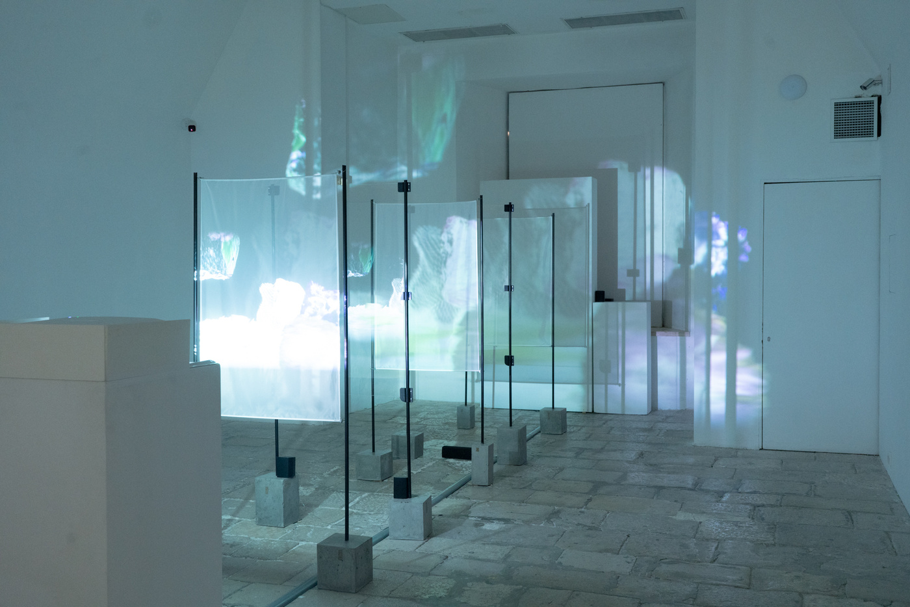
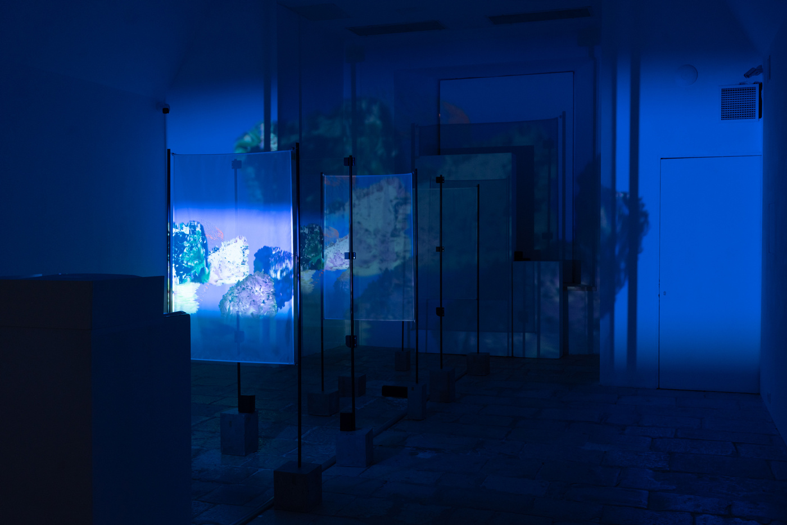

Sounds in Space
Audio installation
Sounds in Space is an audio installation that evolves from nine audio samples captured in the cosmos by NASA space explorers. The main object — a rock from Earth — was digitally scanned and regenerated through Touchdesigner to assume a new form moulded by the sound pieces of space itself. Slices of this newly generated rock are then projected through a series of surfaces that echo the multitude of parallel universes where the rock could exist in ever-changing probabilities.
The audio samples were reworked to create one singular audio production to accompany these visual projections. The work constructs a tangible experience of cosmic sounds, making use of digital tools to visualise how earthly forms could be affected by vibrations from outer space. In this way the artists want to tune into the understanding of the universe as a synergetic system, where all manifestation is composed of energies and vibrations. All of a sudden, distant worlds or planets could be imagined as soundscapes that can be experienced and in the same manner, possible worlds constructed out of sound itself.
Rakel Vella, Jacob Saliba, Emanuel Polidano, Jamie Barbara







